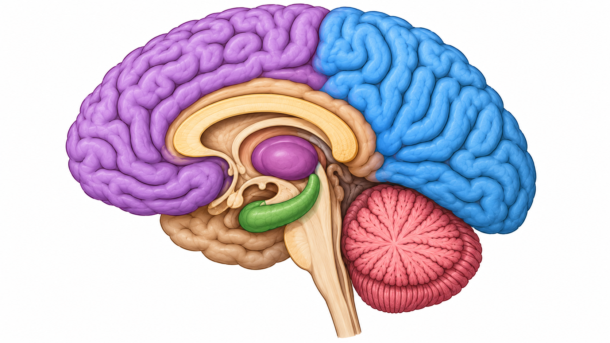

1. Córtex Pré-Frontal
Região anterior do lobo frontal associada ao planejamento, tomada de decisões, controle de impulsos, atenção e funções executivas.
2. Córtex Parietal
Região responsável principalmente pelo processamento de informações sensoriais, percepção espacial e integração de estímulos provenientes de diferentes sentidos
3. Tálamo
Estrutura localizada no diencéfalo que atua como importante estação de retransmissão de informações sensoriais e motoras para o córtex cerebral, além de participar da regulação da atenção e consciência.
4. Hipocampo
Estrutura do sistema límbico fundamental para a formação e consolidação de novas memórias, além de participar da aprendizagem e da orientação espacial.
5. Cerebelo
Estrutura localizada na região posterior do encéfalo, responsável principalmente pela coordenação dos movimentos, equilíbrio, postura e precisão motora.